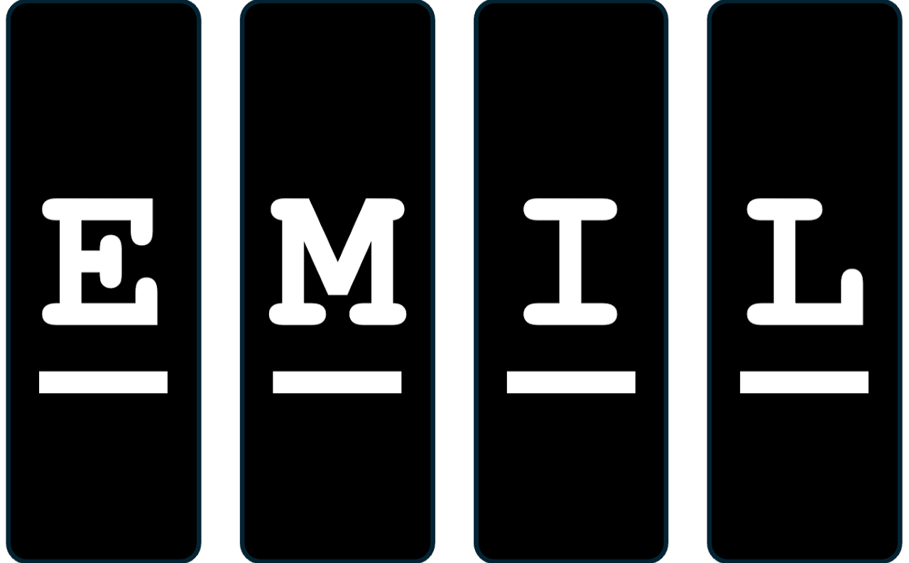

Hi! I am Sanghyeok Moon (문상혁), an undergraduate researcher at Kyung Hee University, majoring in Applied Mathematics with a double major in Computer Engineering. I am currently at the Efficient Multimodal Intelligence Lab, advised by Professor Sungha Choi. Here is my CV.
My research interests span efficient AI systems, AI agents, language models, and retrieval-augmented generation. I am particularly interested in memory systems for LLM agents and making large models practical to deploy. I also have a background in mathematical modeling, from agent-based models to time-series prediction.

* denotes equal contribution
Impacts of Outgroup Aversion and Vaccine Hesitancy on Pandemic Spread
Poster Presentation, JSMB-ASMB, Kyoto, Japan (2025)
Time-varying Empirical Reproduction Number
Poster Presentation, KSIAM, Busan, Korea (2024)
Reasoning Diversity for Self-Distillation (2026)
Evaluated self-distillation objectives for improving reasoning diversity and
mitigating strategy collapse in reinforcement learning for LLMs.
RAG-based Legal QA Chatbot (2025)
Developed a legal QA chatbot using LangChain, Chroma, and GPT-4o mini, with
retrieval-augmented responses grounded in case-law evidence.
ABM-based Simulation of Fertility under Wealth Inequality (2025)
Built an agent-based simulation to analyze how wealth inequality and assortative
mating affected marriage and fertility dynamics.
Price Volatility Forecasting in Daejeon (2025)
Built a forecasting pipeline from 10-year regional price data and applied
ARIMA/SARIMA models for price volatility prediction.
Programming: Python, SQL
LLM: PyTorch, Transformers, LangChain, Chroma, vLLM
Modeling: Agent-Based Modeling, SEIR Models, ARIMA/SARIMA, Echo State Networks
Tools: NumPy, pandas, scikit-learn, Git, LaTeX